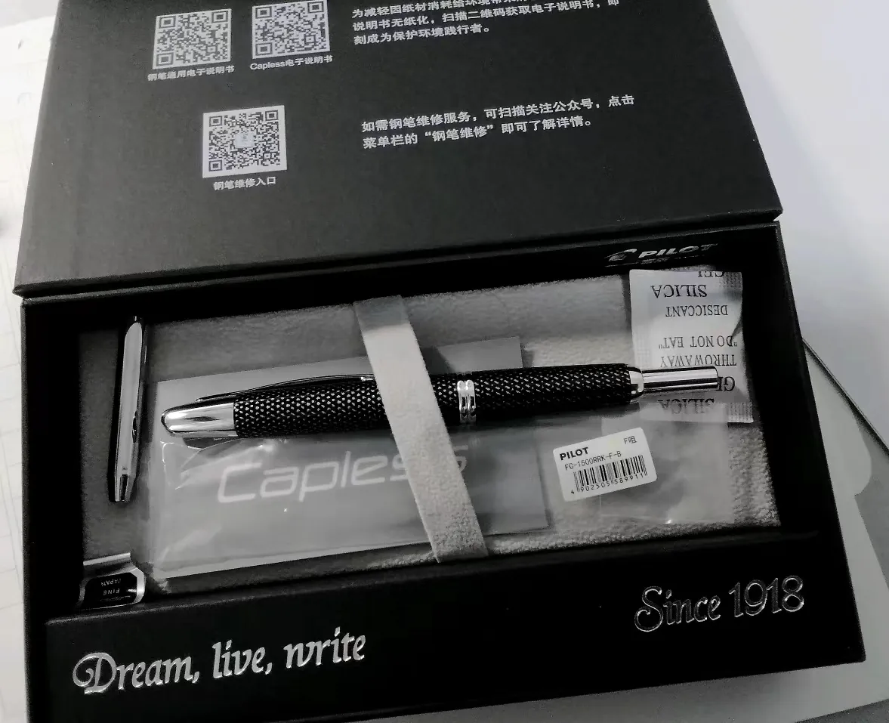
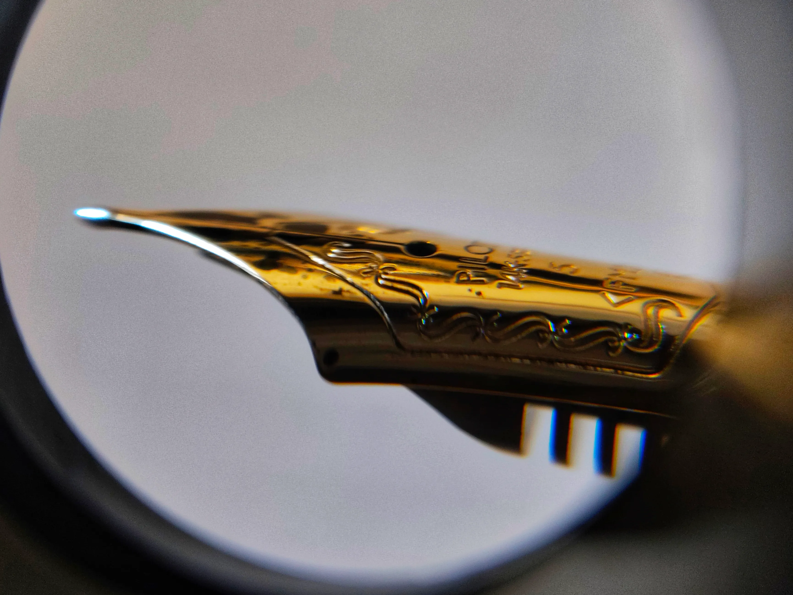

|2024-07-29|
七月二十八日至七月二十九日夜，十二点四十九分。因为二十八日晚上十点来了一杯奶咖，所以到现在仍无睡意。本来这点咖啡因对我的影响与蚍蜉撼树无异——我是一直以咖啡因耐受而自豪的。但是因为最近放假松懈，脑力活动减少，所以只能在这里写些文字，召唤睡意。
刚才想到夜晚的文字工作和一首俄语歌应该是绝配，遂起身拿起耳机想播放 Макsим 的 Другая реальность，但是可能因为动作噪音有点大惊动了家人……多少伤些情致，只能在寂静之中在学校平板上打字了。
刚才过去的一天又是颓废的一天，昨天又听了数个小时的有声书，无所事事。
说到手边的万年笔，我到现在一共经手了五只金笔了。第一支写乐 14k 标准鱼雷黑银，这也是我非常中意的一款笔。标准的鱼雷与大班式笔形，大方的中环，镀铑的 14k585 金尖，微妙的写感。糟糕的是铱粒是窒息的三七开，只能拿到修笔师傅处打磨处理……当时也不知道什么是写乐专属的阻尼写感，错过了体验其最好的时期，直到写出书写面来才反应过来自己应该品悟一下这微妙的写感。
后续又买了一支四季织「万叶」，1911 老尖。到手后发现笔杆也十分绮丽，现在是我兼具最昂贵与最美貌两个定语的收藏品。后来过手了 pilot capless 九代黑絣纹，和末匠 Ti-200 拉丝金尖，现在都在咸鱼上折价出掉了，也就是这两支笔让我认为最适合我的笔就是原始经典的明尖设计。
现在在用 custom 74，有点飞白，很平庸。
不知不觉就开始喋喋不休聊起笔来了，钢笔入坑还不到一年，就已经懂的挺多了。这要归功于我近段时间在钢笔圈子里高强度的网上冲浪。这样的休闲也带来了必定的后果，这学期的成绩可谓波谲云诡，也越来越想自己一个人呆着——得出结论：人最终还是要跟自己玩，多放些心思在提升自己和自己的爱好上，人是需要有点孤僻性格的。
最近最想要的是磨豆机和摩卡壶，因为比较喜欢喝纯咖啡，而摩卡壶符合这种需求。家里原来买了一个飞利浦的咖啡机，在我看来这就是一个娇贵玩意，看着好看而已，这不，前几天趴窝了。所以现在的咖啡需求只能用瑞幸咖啡浓缩液作为下下下位替代。